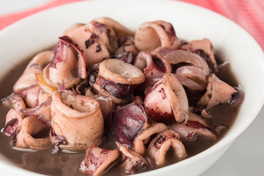

Ginisang Pusit is a quick and simple sautéed squid recipe that anyone can easily make. The secret to a good ginisang pusit is in the quality of the ingredients: using fresh squid is highly recommended, along with the use of fresh vegetables.
Ingredients
2 lbs. medium squid cleaned and sliced
2 medium tomatoes cubed
1 medium yellow onion minced
2 teaspoon minced garlic
2 tablespoons cooking oil
1 tablespoon fish sauce
1/2 cup water
Ground black pepper to taste
Instructions
Heat the cooking oil in a wok or sauté pan.
Saute the onion, garlic, and tomato.
Once the onion gets soft, add the squid. Cook for 2 minutes.
Put-in the fish sauce and water. Stir. Continue to cook for 3 to 5 minutes.
Add the ground black pepper and adjust the taste by adding more fish sauce, only if needed.